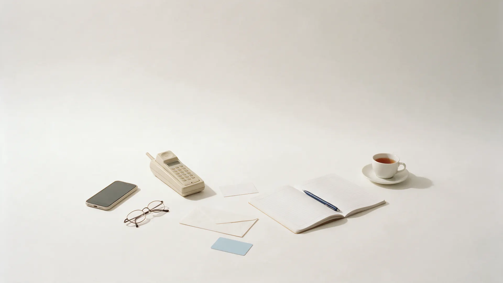
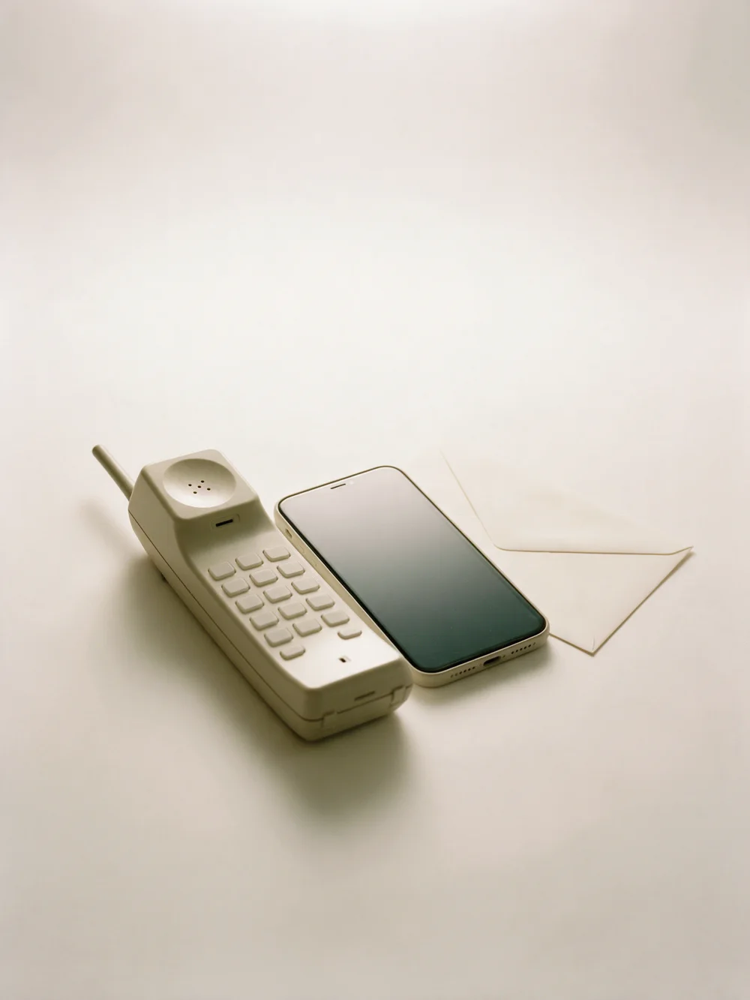
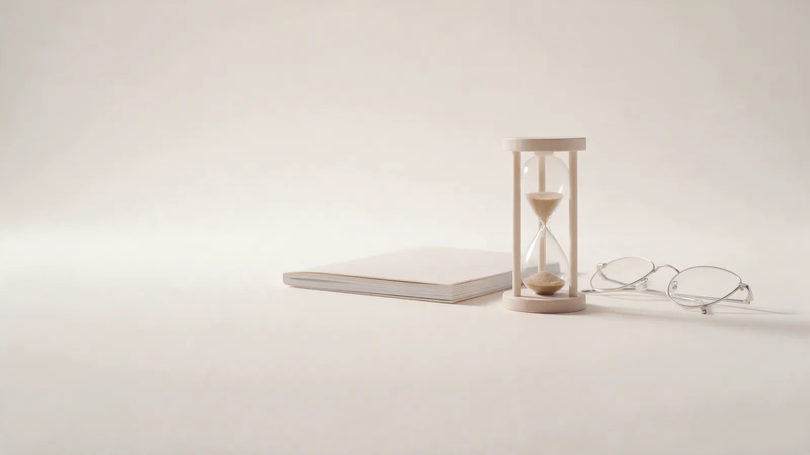
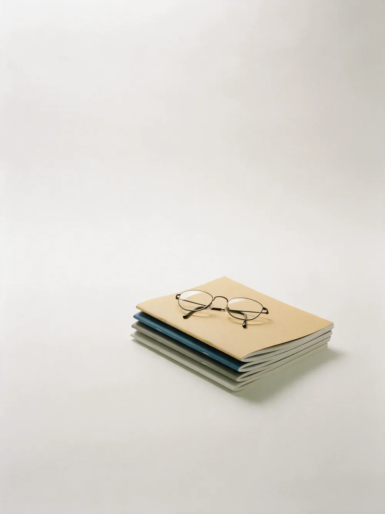

Демо-макет · все данные вымышленные
Онлайн-курс простыми словами
Курс для пенсионеров: как распознать мошенников до потери денег
Короткие уроки без сложных слов: какие обманы бывают, как их узнать и что делать, если уже позвонили.
Или позвоните: +7 900 000-00-00
Почему попадаются
Мошенник не говорит: «Я мошенник»
Он звонит как «служба безопасности банка», «внук» или «следователь» и торопит, чтобы вы не успели подумать. Кто знает схему заранее, тот просто кладёт трубку.
Эти обманы существуют на самом деле
Мошенники повторяют одни и те же сценарии. На курсе мы разбираем их по одному: как звучит обман, на что он давит и что делать в первую минуту.
- Звонок «из банка»Говорят про подозрительную операцию и просят назвать код из СМС. Этот код – ключ к вашим деньгам, настоящий банк его не спрашивает.
- «Внук попал в беду»Звонят, плачут, говорят про аварию и просят деньги прямо сейчас. Голос подделать легко, а подумать вам не дают.
- Ссылка в сообщенииПосылка, штраф, выигрыш: нажмёте на ссылку и введёте пароль на поддельной странице. Пароль достанется мошеннику.
- Звонок от «следователя»Просят помочь поймать преступников и перевести деньги на «безопасный счёт». Настоящая полиция так не делает.
- Выгодное предложениеВыигрыш, компенсация, вложения «без риска». Чтобы получить деньги, сначала просят заплатить – это и есть обман.
- Гость на порогеПриходят «из газовой службы» или «из соцзащиты», хотят войти в квартиру или продать прибор. Вы никого не вызывали.

Четыре коротких урока, шаг за шагом
Курс устроен как тетрадь: на каждой странице один урок и три правила, которые стоит запомнить. Вот она, страница за страницей.
- Урок 1Телефонные обманы
- Урок 2Сообщения и ссылки
- Урок 3Деньги и карта
- Урок 4Если уже позвонили
В конце каждого урока – три правила. Их можно выписать на листок и положить у телефона.
20 минут без спешки
Каждый урок устроен одинаково: посмотрели пример, разобрали, проверили себя. Знакомая схема – не страшно.
Записаться на курс
0–4 минуты
Живой пример
Разбираем типичный звонок или сообщение: что говорят и как звучит голос.
Вы: узнаёте знакомые слова.
4–12 минут
На что давят
Страх, спешка, «никому не говорите». Показываем, какое слово выдаёт обман.
Вы: слышите сигнал тревоги.
12–17 минут
Что сделать
Один простой шаг: положить трубку, не нажимать, перезвонить самому по номеру с карты.
Вы: уходите с понятным действием.
17–20 минут
Проверьте себя
Три вопроса по уроку и три правила на листок. Спокойно, без оценок.
Родные: можно пройти урок вместе.
Сколько стоит курс и как записаться
Цена одна и названа заранее. Если удобнее записаться по телефону, просто позвоните.
- Смотрите с чего удобно: телефон, планшет или компьютер
- В своём темпе: урок можно остановить и вернуться
- Не открывается урок? Позвоните, подскажем по телефону

Пробный урок
20 минут300 ₽Один урок целиком: посмотрите, понятно ли объяснение, и решите, нужен ли вам весь курс.
Курс из 4 уроков
4 × 20 минут2 900 ₽Все четыре урока и листок с правилами. Проходите в своём темпе: хоть по уроку в день, хоть по уроку в неделю.
Курс в подарок родителям
4 × 20 минут2 900 ₽Вы оплачиваете, родители учатся. Можно пройти курс вместе и обсудить каждый урок.
Объясняю так, как объяснил бы родному человеку
Без сложных слов. Если слово непонятно, объясняю его сразу и на примере.
Не стыжу за ошибки. Обмануться может любой: мошенники работают профессионально. Вопросы можно любые.
Не пугаю и не обещаю «100 % защиты». Обещаю другое: вы будете знать, как выглядит обман и что делать в первую минуту.
Начните с пробного урока
Запишитесь на курс или просто позвоните: расскажем, как всё устроено, и подскажем, как открыть первый урок. Глупых вопросов у нас нет.